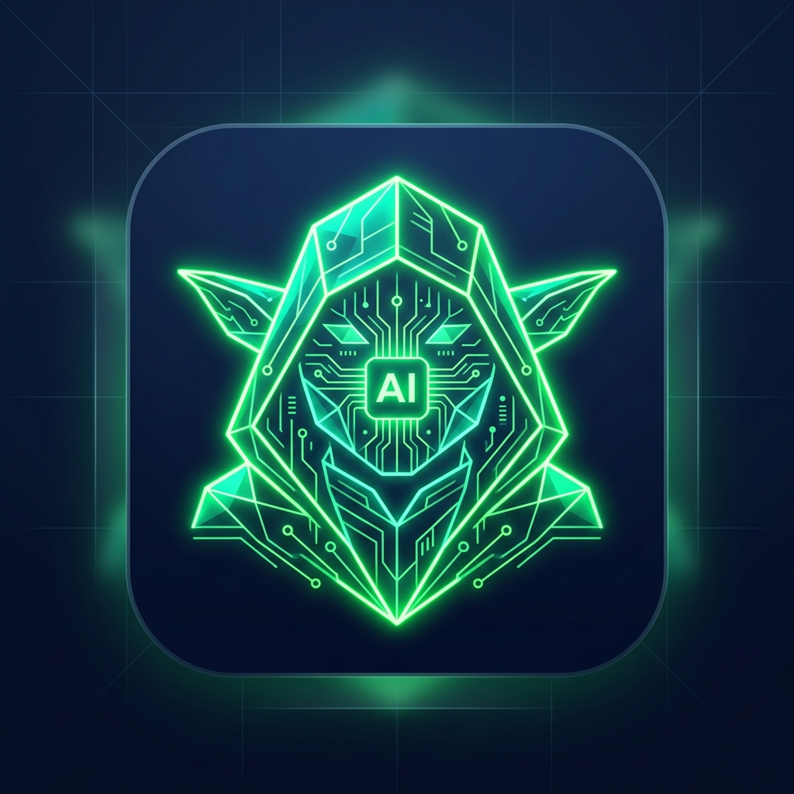

⌘
VS Code extension
Run agent tasks, search the workspace, review write proposals in native diffs, and stream tool events inside the editor.

YodaManLocal-first developer intelligence
A private agent ecosystem for understanding, searching, changing, and reviewing your code across desktop, VS Code, and mobile, with Ollama-only Graphify knowledge graphs.
One runtime, many surfaces
Run agent tasks, search the workspace, review write proposals in native diffs, and stream tool events inside the editor.
Manage projects, plugins, sessions, indexing, model settings, approvals, and runtime health from a packaged desktop app.
Pair with the machine running YodaMan, check status, search code, ask questions, and approve pending file changes.
REST and SSE endpoints expose task events, pending approvals, policy, audit logs, semantic search, and plugin tools.
Core pillars
YodaMan is built for serious local work: private context, visible automation, one shared runtime, and tools that can be extended without becoming invisible.
Project context starts on your machine. Watched directories are indexed locally and reused by chat, search, agent tasks, plugins, and external clients.
Agents can reason through multi-step coding work, while streamed task events, approvals, cancellation, and audit logs keep people in control.
The Express runtime is the shared contract for the React UI, desktop shell, VS Code extension, mobile app, and CLI package.
Built-in tools cover search, reads, controlled writes, patches, commands, and file listing. Plugins add custom capabilities with declared permissions.
New in 0.3.9
Context Expert, Graphify, and OpenSpec are all required — so YodaMan makes them compose. The new Stardust dashboard brings a live change board, spec diffs, activity feed, and three GUI tools that prove the tools actually work together.
The Stardust tab is now a real-time OpenSpec dashboard. A card-based change board shows every active change with task progress, validation health, and live timestamps. Click any card to open a side-by-side spec diff with operation-grouped deltas (ADDED/MODIFIED/REMOVED/RENAMED) and a one-click validate/archive workflow.
The new Compose tab answers: "what does every tool know about this file?" Enter any repo path to see which OpenSpec specs describe it, its Graphify structural position (dependents, centrality, blast radius, test coverage), and how Context Expert ranks it. Three columns, one file, no guesswork.
The Trust tab shows per-tool health (Context Expert index freshness, Graphify graph state, OpenSpec CLI status) plus the overall WorkspaceReadiness verdict. A live activity feed tracks every file change in openspec/ pushed over WebSocket. Post-write reindex and regraph keep answers honest.
The SearchTrace tab shows WHY each result ranked where it did. Every file gets three scores: semantic relevance from Context Expert, graph proximity to your active file, and structural centrality from Graphify. The blend (0.6 + 0.25 + 0.15) is visible per result with colour-coded bars.
Installable plugin
Holocron VR is a YodaMan plugin that transforms local Graphify knowledge graphs into an explorable Three.js and WebXR scene. Files become glowing nodes, dependencies become spatial paths, and architecture becomes something you can inspect with desktop controls, voice commands, or a Meta Quest headset.

Agent workflows
YodaMan can search, read, patch, write, list files, and execute commands inside allowed workspaces. Risky actions are visible through streamed events, approval prompts, and an audit log.
Local-first safety
File and command tools resolve paths against configured roots before they run.
High-risk shell patterns are blocked by policy. Every file write pauses for a structured approval showing the diff, the files that depend on it, and whether any test covers the change.
Mobile clients can pair through a temporary token and deep link to the machine running YodaMan.
Tool calls are recorded with status, duration, sanitized parameters, and result summaries.
Install
# Required — Context Expert (workspace indexing & search)
npm install -g @contextexpert/cli
# Required — OpenSpec (spec-driven development)
npm install -g @fission-ai/openspec@latest
# Required — Graphify (knowledge graphs)
python3 -m pip install graphifyy
# Required — Ollama (local LLM)
# Download from https://ollama.com
brew install ollama # macOS
# or: curl -fsSL https://ollama.com/install.sh | sh # Linux
# or: winget install Ollama.Ollama # Windowsnpm install -g yodamanyodamanhttp://localhost:3090Plugin install
Download the plugin zip, extract it into your YodaMan plugins directory, reload plugins, then open the Holocron VR tab from YodaMan.
unzip holocron-vr-0.5.1.zip -d ~/.yodaman/plugins/holocron-vr
yodamanDownloads
Choose the client that fits your workflow: desktop for the full control center, VS Code for editor-native access, and mobile for approvals on the move.
Apple Silicon build for macOS users who want the full local workspace experience.
Download DMG Download macOS ZIP Use the ZIP option when you prefer a portable package.Windows x64 builds are produced on a native Windows runner so the installer is packaged correctly.
Latest Windows build Grab theyodaman-windows-latest artifact from the most recent release run. A local
cross-build cannot package a working Windows installer, so we do not ship one from here.
Linux x64 AppImage and portable ZIP for flexible desktop installation.
Download AppImage Download Linux ZIP Choose AppImage for a single-file launch or ZIP for portable setup.Install YodaMan from the Marketplace or download the VSIX for editor-native agent access.
View on Marketplace Download VSIX Use the VSIX for offline installs or internal distribution.Install the Graphify VR explorer plugin for desktop 3D, WebXR code constellations, Git heatmaps, time travel, voice commands, and agent handoff.
Download Plugin Version 0.5.1. Extract into your YodaMan plugins directory, then reload plugins.Pair with your YodaMan runtime to monitor tasks, search projects, and approve changes from your phone.
Pair mobile Mobile access is designed for lightweight oversight away from the keyboard.Use the iOS companion experience for task status, approvals, and project visibility on the go.
Pair mobile Built for quick review moments when you are away from your desktop.Project docs